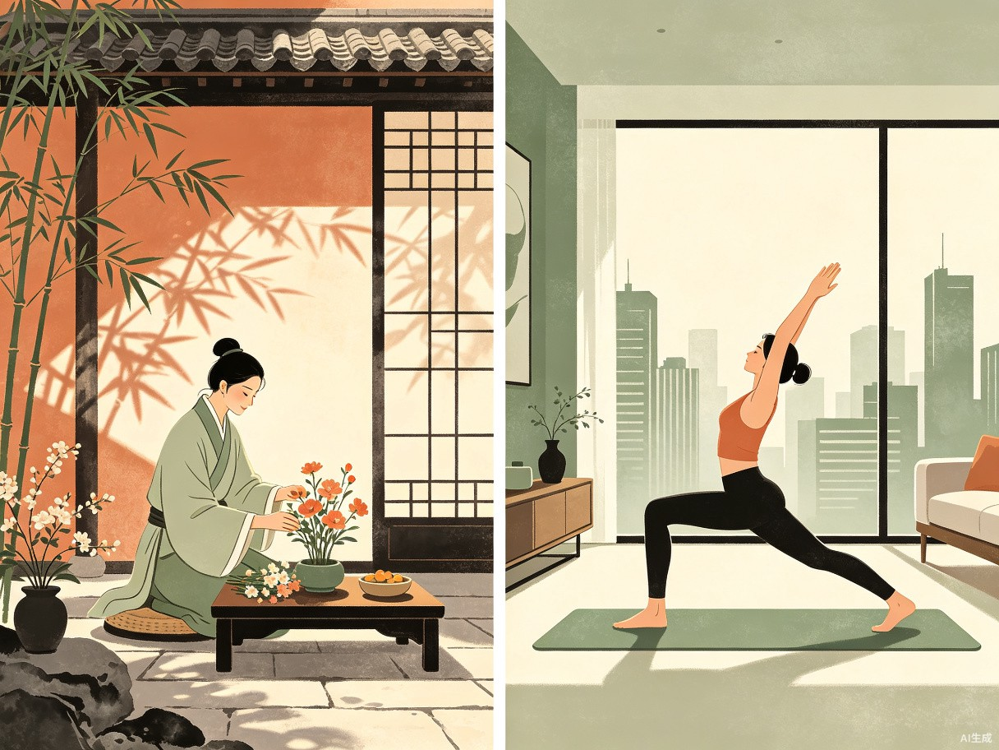
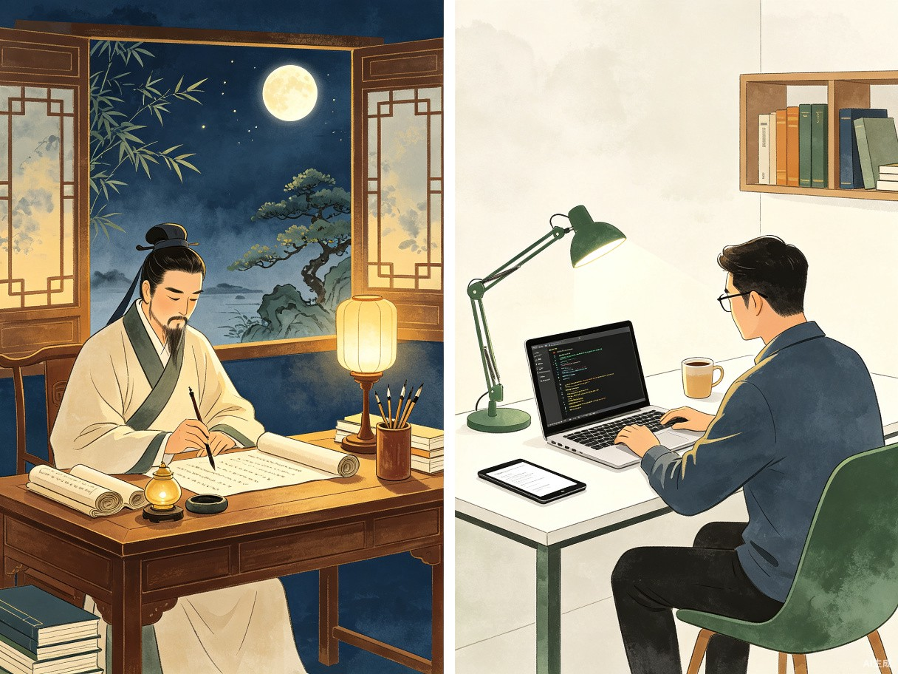
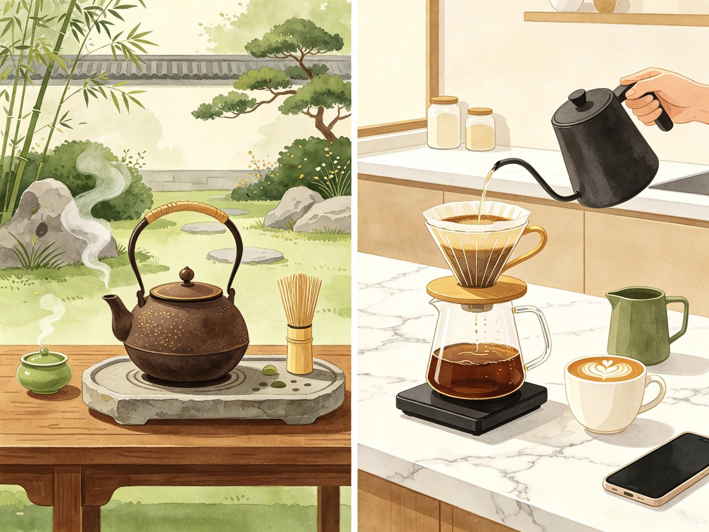
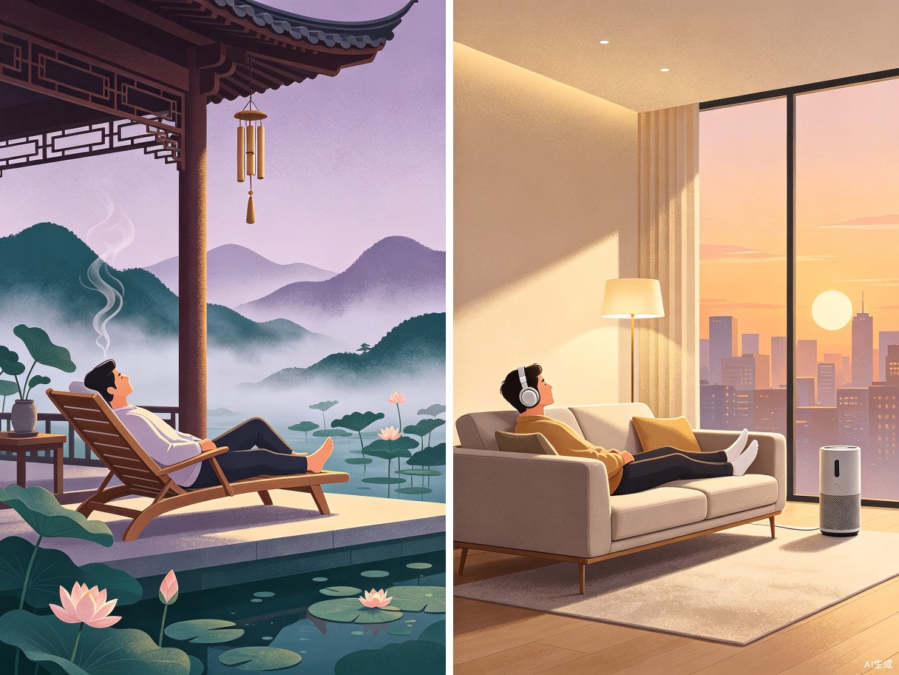

不做诗词，不做纹样，不做古建。
以日常起居、读书、饮茶、休憩为棱镜，折射千年生活智慧的当代回响。
国潮兴起，但同质化严重。我们观察市场发现，几乎所有国风产品都困在同一个维度里—— 表面符号的搬运，而非生活哲学的转译。
龙凤、祥云、青花、书法——市场上90%的国风设计停留在表面纹样的重复排列，消费者已产生严重的"国风免疫"。
国风设计聚焦于宫殿庙宇、亭台楼阁，距离当代青年的日常生活太远。看的是别人的房子，过的是自己的日子。
"床前明月光"式的古典诗词引用已成为万能公式，千篇一律的文人叙事让国风逐渐失去新鲜感和当代共鸣。
我们跳脱纹样、建筑、诗词的窠臼，从"人如何过日子"出发， 以当代青年最日常的四个生活场景为轴心，与古人的生活方式展开深度对话。
聚焦起居、读书、饮茶、休憩四大高频场景，每个场景都是古今对话的锚点。
不搬运符号，不复制纹样，而是将古人生活智慧转译为当代可感知的视觉语言。
以现代数字设计语言承载东方美学内核，科技感与人文感并存。
剥离冗余装饰，用留白、对比、克制的手法呈现古今生活的本质共鸣。
从晨起梳洗到夜半休憩，从窗下苦读到茶席清谈—— 每一个场景都是跨越千年的生活对话。

Ancient古人晨起第一件事不是"做事"，而是"安顿自己"——焚一炉香、插一瓶花、听一阵风。 这种"先安顿，再出发"的起居哲学，恰恰是当代青年最缺失的生活仪式。

Modern古人读书讲究"净手焚香、端坐正念"，这种物理空间上的仪式感， 实际上是在为大脑切换进入"深度模式"。 当代青年的信息过载，恰恰需要这种有意识的环境切换。

Ancient古人的茶席不是"喝茶"，而是一套完整的社交仪式——选器、注水、闻香、品味， 每一个动作都在传递"我在此刻，只关心你"的信号。 当代精品咖啡文化，正在不自觉地复刻这种慢社交哲学。

Modern古人"偷得浮生半日闲"不是懒惰，而是一种高级的自我管理。 在亭中听雨、在廊下观山，本质上是在进行一种"注意力排毒"。 当代青年追捧的冥想、数字断联，只是换了工具的同一种需求。
这不只是一个设计项目，而是一次关于"国风设计还能做什么"的实验。
从"看古人的东西"转向"看古人的日子"——这是国风设计从未被充分开发的叙事维度，为行业提供全新的创作范式。
让当代青年在古今对照中看见自己，建立的不是对"传统文化"的仰望，而是对"美好生活"的共鸣。国风从此可以走心。
用前沿的数字视觉语言讲述东方故事，证明科技感与人文温度可以共存，为国潮设计开辟"科技国风"的全新表达路径。
围绕"古今生活对照"核心理念，输出三大定制产品：
以四幕场景为核心，呈现古今生活方式的对照可视化图鉴，科技感视觉语言 + 东方美学内核。
深度解读古人四大生活场景中的智慧，并转译为当代可实践的生活美学指南。
提取每个场景的核心"共振点"，以极简设计语言创作可独立挂展的对照艺术画。